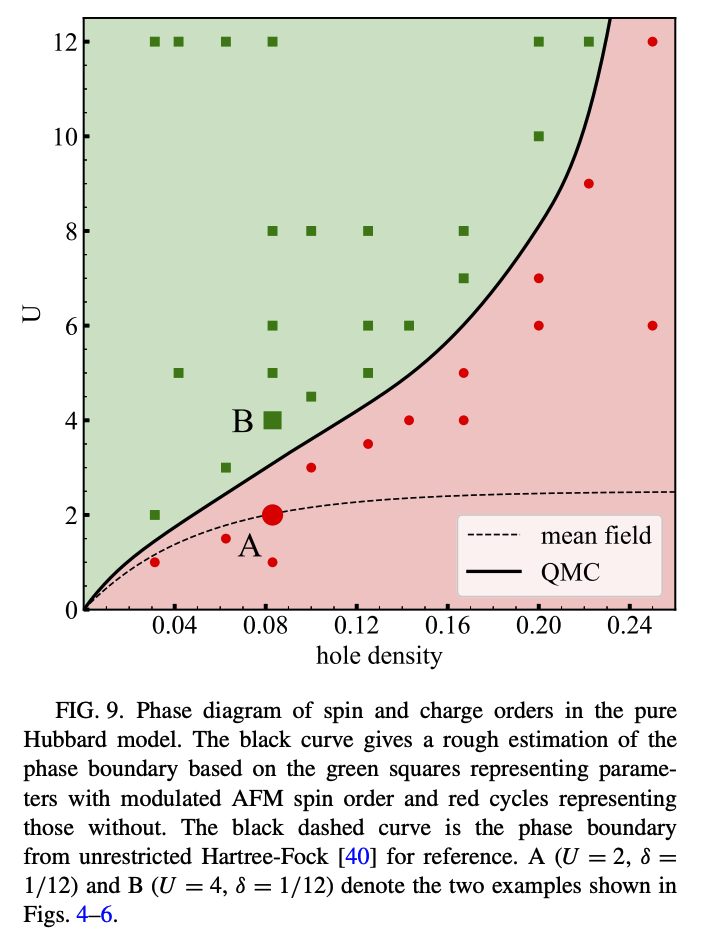
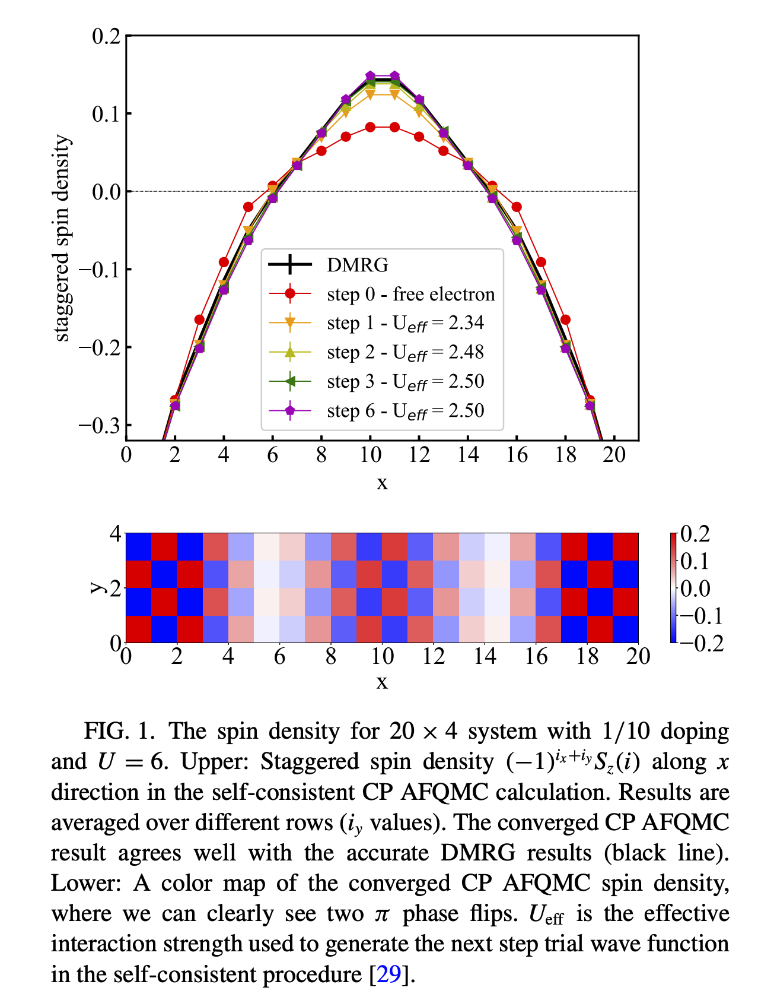

Download this notebook (.ipynb + data files)
2. Stripes and the Square Hubbard Model#
Author: Ryan Levy
import os
# This is in case you have a GPU-enabled JAX but are running on CPU.
os.environ['JAX_PLATFORMS'] = 'cpu'
# Don't preallocate GPU memory, so that several notebooks can share the same GPU
os.environ["XLA_PYTHON_CLIENT_PREALLOCATE"] = "false"
# use x64 numbers
from jax import config
config.update("jax_enable_x64", True)
import matplotlib.pyplot as plt
import numpy as np
# create scratch directory in notebook path
%mkdir -p {_dh[0]}/data
%cd -q {_dh[0]}/data
2.1. Physics Background#
In the paper Stripes and spin-density waves in the doped two-dimensional Hubbard model: Ground state phase diagram [1] we see that for the nearest-neighbor square Hubbard model, the ground state may have stable staggered stripe order.

We’ll explore how to see this with AFQMC and the role of the trial wavefunction.
[1] Hao Xu, Hao Shi, Ettore Vitali, Mingpu Qin, and Shiwei Zhang, Stripes and spin-density waves in the doped two-dimensional Hubbard model: Ground state phase diagram, Phys. Rev. Research 4, 013239, published 28 March 2022.
DOI: https://doi.org/10.1103/PhysRevResearch.4.013239
2.2. Obtaining the Spin Density#
Let’s look at a 10×4 system with 0.2 doping at \(U=6\) with a staggered AFM pinning field at the edges. The pinning breaks symmetry in order to understand the response of the system to the applied field.
When confronted with a new problem, the first thing we generally do is use a non-interacting (free-electron) wavefunction as the trial. Let’s do that now.
U = 6.0
lattice_dims = (10,4)
from safiretools import Lattice
lattice = Lattice.from_type(
'square', lattice_dims, boundaries=('open', 'periodic'), twists=(0.0, 0.0)
)
Ne = int(lattice.N_sites*(1-0.2))//2
nelec = (Ne,Ne)
nelec
from safiretools import vis
vis.plot_lattice(lattice)
The Hamiltonian will be simple,
where PinningField.afm adds the edge pinning. We’ll assume \(t=1\) and \(h_i=0.5\), just like in the paper.
from safiretools import LatticeHamiltonian, PinningField
# staggered AFM pinning on the two open edges at the ends of axis 0
pinning = (PinningField.afm(0.5, staggered=True), None)
# standard Hubbard terms; nearest-neighbor hopping with t=1 is included by default
hamiltonian = LatticeHamiltonian.from_lattice(
lattice,
U=U,
pinning=pinning,
)
from safiretools import Wavefunction
# get a trial wavefunction: First, let's try a free-electron (i.e. non-interacting) wavefunction.
# from_free_electron() takes the Hamiltonian itself.
#
# No twist is needed here: the open boundary along axis 0 and the pinning field
# already split the shells, so the determinant is well defined. On a fully
# periodic, unpinned lattice it would not be. See the 4×4 Hubbard example.
wavefunction = Wavefunction.from_free_electron(
source=hamiltonian,
nelec=nelec
)
Now we’ll write the job file to run AFQMC.
from safiretools import write_jobfile
bp_lengths = [500]
# make an input file
afqmc_params = {
"timestep": 0.005,
"steps": 10000,
"population_control_interval": 2,
"walker_ortho_interval": 2,
"num_walkers": 640,
"measure_interval": 2,
"equilibration_steps": 2000,
"estimators": {
"backprop": {
"walker_ortho_interval": 2,
"propagation_steps": bp_lengths,
"onerdm": {}
}
},
"propagator": {
"use_cp_constraint": True,
"project_force_bias": True
}
}
write_jobfile(
"afqmc.json",
{
"seed": 42, # just for reproducibility
"execute": {
"wavefunction": wavefunction,
"hamiltonian": hamiltonian,
**afqmc_params
}
}
)
!mpirun -n 16 $AFQMC_EXEC afqmc.json
from safiretools import Results
results = Results("afqmc.results.h5")
vis.plot_timeseries(results)
2.2.1. Analysis#
We’ll now analyze the spin density of the output given the free-electron trial.
x, y = np.arange(lattice.L[0]), np.arange(lattice.L[1])
# staggered signs (-1)^(x+y), in the site order of the lattice
staggered_signs = ((-1)**(x[:, None] + y[None, :])).flatten()
def spin_density(rdm):
"""S^z on each site, from a collinear one-rdm."""
return 0.5*(rdm[0].diagonal() - rdm[1].diagonal()).real
def column_sz(rdm):
"""Staggered S^z averaged over each column, from a collinear one-rdm."""
return (staggered_signs*spin_density(rdm)).reshape(lattice.L).mean(1)
bp_rdm = f"BackPropEstimator/Steps={bp_lengths[-1]}/OneRDM"
# DMRG data of the form: site Sz Nup Ndn
SzDmrg = np.loadtxt("../files/data_10x4_Ne16U6.0_15360.dat",usecols=(1,))
dmrg_sz = -(staggered_signs*SzDmrg).reshape(lattice.L).mean(1)
Zs, delta_Sz = results.evaluate(spin_density, [bp_rdm])
plt.imshow(Zs.reshape(*lattice.L).T)
plt.colorbar()
plt.show()
plt.imshow(delta_Sz.reshape(*lattice.L).T)
plt.colorbar()
plt.show()
# now we'll average over the columns
sz_cols, sz_cols_err = results.evaluate(column_sz, [bp_rdm])
plt.errorbar(np.arange(lattice.L[0]),sz_cols,yerr=sz_cols_err,
fmt='o-',label="AFQMC Free Electron")
plt.plot(dmrg_sz,label="DMRG",c='k')
plt.xlabel("Col")
plt.ylabel("Staggered $S^z$")
plt.legend()
plt.show()
2.3. Self-Consistency with Hartree-Fock#
The idea behind self-consistent AFQMC is to have the trial wavefunction match as much as possible the output of AFQMC.
For this model, we can do this by introducing an effective Hubbard model, where \(U\) is replaced with \(U_\text{eff}\). By solving Hartree-Fock (mean-field theory) for this effective model and using the result as a trial wavefunction, we can scan through different \(U_\text{eff}\) to find the one that matches the best.
We’ll use AutoHF to explore creating a trial wavefunction for AFQMC. Let’s do a few between \(U_\text{eff}=1\) and \(U_\text{eff}=4\).
Note: The Hartree-Fock code is faster if you use a GPU.
from autohf import solve_hf, AutoHFHamiltonian
Ueffs = [1,2,3,4]
trial_wfns = {}
for Ueff in Ueffs:
hamiltonian_eff = LatticeHamiltonian.from_lattice(
lattice,
U=Ueff, # We want our HF solver to solve Ueff not U
pinning=pinning,
)
hf_settings = dict(
steps = 2000,
opt_method="lbfgs",
ansatz="SD_ROT",
nelec = nelec,
batch_size = 8,
seed = 1,
noncollinear = False
)
results = solve_hf(
hamiltonian=AutoHFHamiltonian(hamiltonian_eff),
settings=hf_settings,
)
# the trial solves the Ueff model, but AFQMC runs with the original Hamiltonian (U=6)
trial_wfns[Ueff] = Wavefunction.from_single_determinant(
tuple(np.asarray(o) for o in results[0]["orbitals"])
)
write_jobfile(
f"afqmc_{Ueff}.json",
{
"seed": 42,
"execute": {
"wavefunction": trial_wfns[Ueff],
"hamiltonian": hamiltonian,
**afqmc_params
}
}
)
print(f"Wrote afqmc_{Ueff}.json")
for Ueff in Ueffs:
!mpirun -n 16 $$AFQMC_EXEC afqmc_{Ueff}.json
# Ueff=0 stands for the free-electron trial of the first run
runs = {0: Results("afqmc.results.h5")}
for Ueff in Ueffs:
runs[Ueff] = Results(f"afqmc_{Ueff}.results.h5")
for Ueff,run in runs.items():
Zs, delta_Sz = run.evaluate(spin_density, [bp_rdm])
fig,axes = plt.subplots(1,2,figsize=(12,4))
p = axes[0].matshow(Zs.reshape(*lattice.L).T)
plt.colorbar(p,ax= axes[0], label = "$S^z$")
p =axes[1].matshow(delta_Sz.reshape(*lattice.L).T)
plt.colorbar(p,ax= axes[1], label=r"$\Delta S^z$")
if Ueff==0:
fig.suptitle("Free Electron")
else:
fig.suptitle(f"{Ueff=}")
plt.show()
2.4. Self-Consistency Condition#
We’ll now measure the error between the trial wavefunction’s observable and the output from AFQMC.
trial_sz = {}
for Ueff in runs:
if Ueff==0:
trial = wavefunction
else:
trial = trial_wfns[Ueff]
# determinant() gives the leading determinant's alpha and beta orbitals
alpha, beta = trial.determinant(0)
# one-rdm of a determinant with orthonormal orbitals
rdm = np.array([alpha.conj() @ alpha.T, beta.conj() @ beta.T])
trial_sz[Ueff] = column_sz(rdm)
# now we'll average over the columns
for Ueff,run in runs.items():
sz_cols, sz_cols_err = run.evaluate(column_sz, [bp_rdm])
if Ueff==0:
label = "Free Electron"
else:
label = f"HF Ueff={Ueff}"
plt.errorbar(np.arange(lattice.L[0]),
sz_cols,yerr=sz_cols_err,
fmt='o--',label=label)
plt.plot(dmrg_sz,'x-',label="DMRG",c='k')
plt.xlabel("Col")
plt.ylabel("Staggered $S^z$")
plt.legend()
plt.show()
xs,ys,yerrs = [],[],[]
for Ueff,run in runs.items():
deviation, deviation_err = run.evaluate(
lambda rdm: np.mean(np.abs(column_sz(rdm)-dmrg_sz)), [bp_rdm]
)
xs.append(Ueff)
ys.append(deviation)
yerrs.append(deviation_err)
plt.errorbar(xs,ys,yerr=yerrs,fmt='o-',label="AFQMC",capsize=6)
plt.xticks(xs)
plt.xlabel("Ueff")
plt.ylabel(r"$\langle |$DMRG $S^z - $AFQMC $S^z|\rangle$",fontsize=12)
plt.legend()
plt.grid()
plt.show()
xs,ys,yerrs = [],[],[]
for Ueff,run in runs.items():
deviation, deviation_err = run.evaluate(
lambda rdm: np.mean(np.abs(column_sz(rdm)-trial_sz[Ueff])), [bp_rdm]
)
xs.append(Ueff)
ys.append(deviation)
yerrs.append(deviation_err)
plt.errorbar(xs,ys,yerr=yerrs,fmt='o-',label="AFQMC",capsize=6)
plt.xticks(xs)
plt.xlabel("Ueff")
plt.ylabel(r"$\langle |$Trial $S^z - $AFQMC $S^z|\rangle$",fontsize=12)
plt.legend()
plt.grid()
plt.show()
So we can see that somewhere around \(U_\text{eff}\approx 3\) would have the lowest error for self-consistency. Despite the difference between DMRG and AFQMC being on average 0.01, there is a clear optimal trial wavefunction to use. For fine-tuning between \(U_\text{eff}\in [2,4]\), we’ll need more sophisticated methods than presented here.
Ref. [1] finds the optimal \(U_\text{eff} \approx 2.77\).
2.5. Your Turn#
2.5.1. Part 1 – Recreate Fig. 1#

Let’s recreate Fig. 1 of Xu et al. [1] by changing
Lattice size 10 × 4 to 20 × 4
Doping 0.2 to 0.1 hole doping
\(U = 6\) ✓
2.5.2. Part 2 – Try Different Settings#
Let’s use this as a testbed to explore how AFQMC responds to different settings. Some questions to consider:
Use \(U_\text{eff} = U\), the bare \(U\) Hartree-Fock trial. How does the quality of the results change?
We compared spin densities; what about the hole density? This is effectively the same as comparing the charge density.
Use a trial with a small number of steps so that the solver doesn’t converge. How do the results change? How could you tell this trial isn’t good?
The free-electron trial isn’t a valid RHF state (why?). What would be the corresponding RHF solution? What does that output look like?
Explore the parameters of back-propagation: how does the one-body reduced density matrix change as a function of the back-propagation length? You can give several lengths in
propagation_stepsto see the results converge.